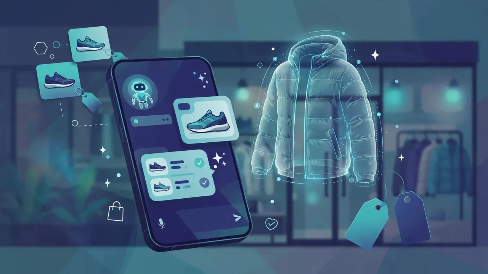

Loops raises $3.5M from a16z Speedrun to build one AI layer for all of e-commerce
Loops has raised a $3.5M seed round, led by Andreessen Horowitz's a16z Speedrun, to build what it calls an "AI operating system for commerce" — a single AI layer that runs product search, shopping assistance, customer support, catalog enrichment and virtual try-on for retailers, all sharing the same understanding of the catalog.
AI is arriving in e-commerce one workflow at a time. Retailers buy one tool for search, another for shopper questions, another for product descriptions and another for virtual try-on — and then stitch them together themselves. Each tool understands one slice of the customer, and none of them shares what the others learn. Loops, a San Francisco startup building AI for brands and retailers, says that fragmentation is the industry's core problem — and it has just raised $3.5M to sell the fix.
One AI layer instead of five tools
Loops' pitch is to run all five jobs on a single platform built around shared product knowledge, business context and customer-journey data. Shoppers describe what they want in plain language, the way they would to a friend or to ChatGPT, and the AI search surfaces products without keywords or filters. A built-in assistant answers questions and carries service conversations across connected channels.
The compounding argument is the pitch. Better catalog data improves search; search gives the assistant context; customer conversations reveal where the product information is weak. Because every module draws on the same understanding of the catalog, the business and what the shopper is trying to do, each part of the system gets sharper as the others learn — the opposite of five disconnected vendors optimizing their own silos.

The round
The $3.5M seed round was led by a16z Speedrun, Andreessen Horowitz's startup accelerator, with NTT Docomo, Connecticut Innovations, Alumni Ventures and Monday Capital also participating. Loops says the capital will fund product development, customer deployment capacity and international expansion.
The company was founded by Ari Nazir, its co-founder and CEO, and İlker Selim Zorluoğlu, its president and co-founder. It is not starting from zero: the company says its agents now handle over a million customer interactions with 99%+ intent-recognition accuracy, serving more than 50 brands — including names in its home region's retail scene — with brands going live in under seven days.
"The biggest mistake we see is treating AI as a collection of features," Zorluoğlu said. "A retailer does not need five different AI products that each understand one slice of the customer. It needs one system that understands the catalog, the business and what the shopper is trying to do."
Why the bet matters
The timing is not accidental. Agentic commerce — shopping mediated by AI assistants rather than search bars — is the industry's current obsession, and the catalog is its foundation: an assistant can only recommend, compare or negotiate over products its model actually understands. Whoever owns the shared product layer stands to own the stack above it.
Loops frames commerce as the proving ground for a larger idea. The company says the same architecture — one system where search, assistance, support and enrichment share a single model of the customer and the catalog — can eventually become the AI operating layer for other industries. Investors, from a16z Speedrun to NTT Docomo, appear to be buying the layer thesis rather than a single retail feature. The next test is whether retailers do too.
Sources: HackerNoon — "Loops Raises $3.5M From a16z Speedrun to Build the Retail OS for Agentic Commerce" (October 13, 2026); FinSMEs — "Loops Raises $3.5M in Seed Funding" (October 13, 2026); Finvestly — "Loops raises $3.5m to build an AI operating system for retailers" (October 13, 2026); Unite.AI — "Loops Raises $3.5M Seed to Connect AI Search, Shopping Assistance, and Retail Data" (October 13, 2026)